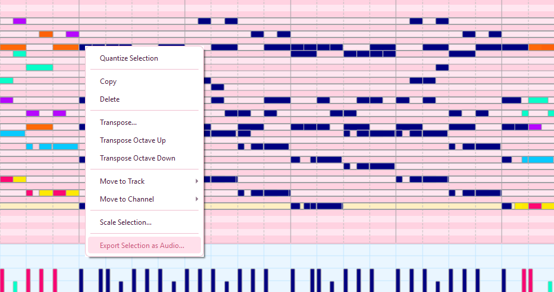
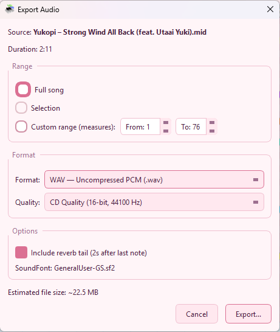
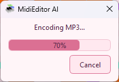
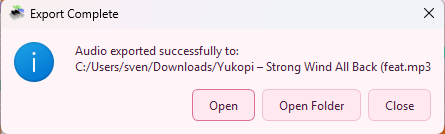

Audio Export
MidiEditor AI can render your MIDI files to audio using the built-in FluidSynth synthesizer and loaded SoundFonts. Export to WAV, FLAC, OGG Vorbis, or MP3 — no external tools required.
The MP3 encoder (LAME 3.100) is compiled directly into MidiEditor AI as a static library. There is no need to install or configure anything.
How to Export
There are three ways to start an audio export:
- File → Export Audio… (or Ctrl+Shift+E) — exports the full MIDI file or a custom range.
- Right-click selection → Export Selection as Audio… — exports only the currently selected notes.
- Export Audio button in the FluidSynth settings panel.

Right-click on selected notes to export just the selection.
Export Dialog
The export dialog lets you configure exactly how your audio should be rendered.

| Setting | Description |
|---|---|
| Format | Choose the output format:
|
| Quality | Preset quality tiers:
|
| Range | What part of the file to export:
|
| Reverb Tail | When enabled, adds extra time at the end so reverb and sustain can fade out naturally instead of cutting off abruptly. |
| Estimated Size | Shows the approximate output file size based on the current settings. |
Export Progress
After clicking Export and choosing a save location, MidiEditor AI renders the audio in the background. A progress dialog shows the current phase and percentage.

For MP3 exports, there are two phases:
- Rendering WAV — FluidSynth synthesizes the MIDI to a temporary WAV file.
- Encoding MP3 — LAME converts the WAV to MP3 at the selected quality.
You can click Cancel at any time during either phase. The temporary files are cleaned up automatically.
Export Completion
When the export finishes, a dialog appears with three options:

| Button | Action |
|---|---|
| Open File | Opens the exported audio file in your default media player. |
| Open Folder | Opens the containing folder in Windows Explorer. |
| Close | Dismisses the dialog. |
Exporting Guitar Pro Files
Guitar Pro files (.gp3, .gp4, .gp5, .gpx, .gp)
can be exported to audio just like regular MIDI files. MidiEditor AI automatically saves the
imported data to a temporary MIDI file for FluidSynth to render. This happens transparently —
no extra steps needed.
SoundFont Requirement
Audio export uses the currently loaded SoundFonts to determine instrument sounds. Make sure at least one SoundFont is loaded before exporting. If no SoundFonts are available, the export will fail with an error message.
Tip: The exported audio will sound exactly like what you hear during playback with FluidSynth. If you want different instruments, reorder or swap SoundFonts before exporting. SoundFonts that are disabled (unchecked) are not used during export.
Format Details
| Format | Type | File Size | Best For |
|---|---|---|---|
| WAV | Uncompressed PCM | Large (~10 MB/min at CD) | Further editing in a DAW, maximum quality |
| FLAC | Lossless | Medium (~6 MB/min at CD) | Archival, quality-conscious distribution |
| OGG | Lossy | Small (~1.5 MB/min) | Web, games, Linux ecosystem |
| MP3 | Lossy (LAME VBR) | Small (~1.5 MB/min) | Universal sharing, broad player support |
Keyboard Shortcut
| Shortcut | Action |
|---|---|
| Ctrl+Shift+E | Open the Export Audio dialog (full file) |
Tips
- No sound in export? Make sure SoundFonts are loaded. The export uses the same SoundFont stack as playback.
- Wrong instruments? Check your SoundFont priority order. The export renders exactly what you hear during playback.
- Export is slow? Hi-Res quality (96 kHz) takes longer to render. Try CD quality (44.1 kHz) for faster exports.
- MP3 for sharing: MP3 at CD quality is the best choice for sharing online or via messaging apps.
- FLAC for archival: FLAC preserves full quality while being significantly smaller than WAV.
- FFXIV SoundFont Mode: If you have FFXIV SoundFont Mode enabled, the export respects it — your bard arrangements will sound correct.